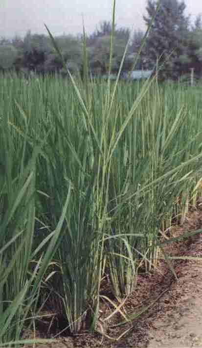

水稻恶苗病
病害别名：徒长病
为害部位：秧苗、节
病害性质：重要病害
病原：稻藤仓赤霉菌[Gibberellafujikurai(Sawada)Wollenw. 水稻恶苗病病原菌
水稻恶苗病病原菌
病害表现：水稻从秧苗期到抽穗期都有发生。发病秧苗常枯萎死亡。未枯死的病苗为淡黄绿色生长细长，一般高出健苗l／3左右，根部发育不良，分蘖少，甚至不分蘖。移栽后1个月左右开始出现症状，病株叶色淡黄绿色，节间显著伸长，节部弯曲，在节上生出许多倒生须根。发病重的病株，一般在抽穗前枯死，轻病株虽能抽穗，但穗小粒少，或成白穗。
水稻恶苗病田间病株(很高)与健株的比较
 水稻恶苗病病株茎节上倒生根(右)与健株茎(左)比较
水稻恶苗病病株茎节上倒生根(右)与健株茎(左)比较
发病规律：病菌主要以分生孢子或菌丝体在种子上越冬。播种后，病菌随着种子萌发而繁殖，引起苗枯；以后在病株和枯死株表面产生的分生孢子，借风雨传播进行再侵染。在水稻开花时，分生孢子落到花蕊上，萌发侵入，又使种子带病。病菌易从伤口侵入，播了受机械损伤的稻种，或秧苗根部受伤重的，发病就重。旱育秧发病常比水育秧重。
病害防治: 种子消毒处理是防治本病的重要措施。具体方法：一是采用50％多菌灵可湿性粉剂或强氯精浸种，方法同稻瘟病；二是用多森铵（恶苗灵）200毫升加水50千克，浸种40千克，浸种4－5天，每天搅拌2－3次，浸种后可直接催芽播种；三是田间发现病株应立即拔出作饲料，不要用病稻草催芽；四是用无病苗选留无病稻种。注意：一种浸种药剂不能单一地多年使用，最好与其它药剂轮换使用，以免恶苗病菌对药剂产生抗药性。